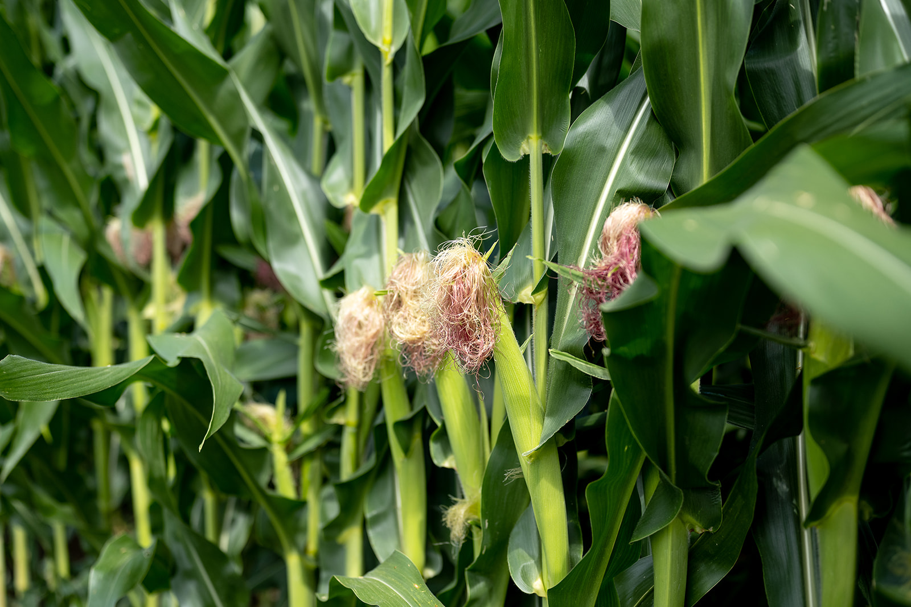
Dekalb & Asgrow
Corn and soybeans
Seed options for corn and soybean acres with placement support by field and management goal.
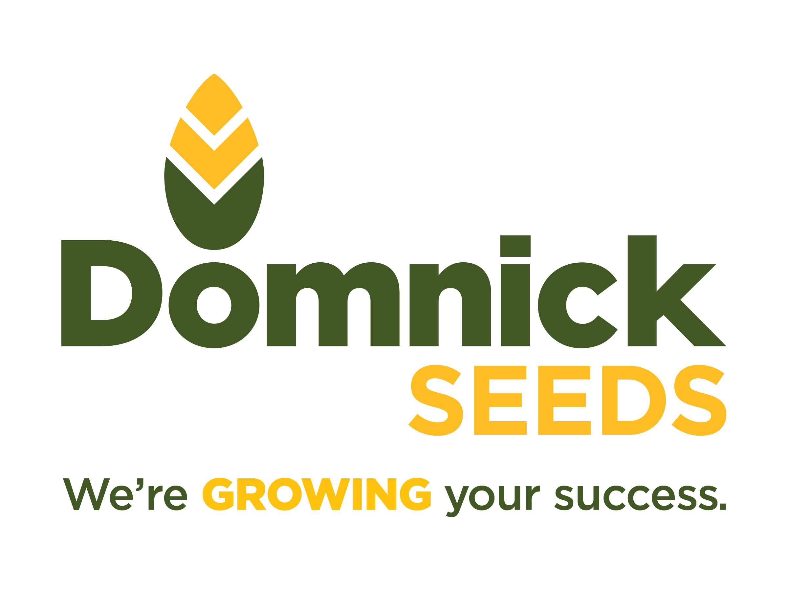
Contact UsProducts & services
Domnick Seeds brings together seed, biologicals, crop nutrition, sampling, spraying, scripting, and chemistry support for growers.
Featured products
These offerings are based on the Domnick Seed Offerings document and can be expanded with product sheets, rates, availability, or seasonal notes.

Seed options for corn and soybean acres with placement support by field and management goal.
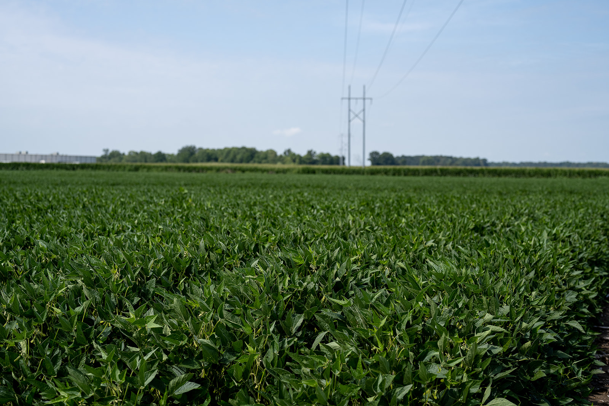
Enlist E3 soybean options for growers looking to match trait platform, maturity, and field fit.

Nitrogen-focused biological support that can be discussed as part of a whole-season fertility plan.
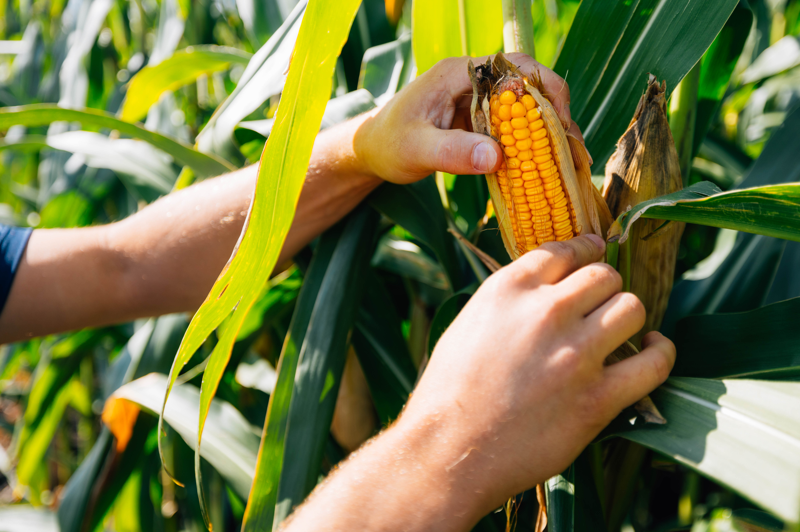
Treatment and in-furrow options to help protect early growth and support stand establishment.
Additional offerings
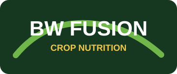
Crop nutrition planning and product programs for in-season plant health and performance.
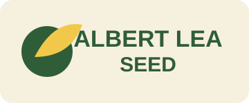
Seed options including cover crops, forages, small grains, and organic-focused solutions.
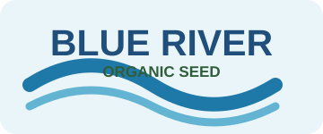
Organic corn seed options for growers managing certified or organic-focused acres.
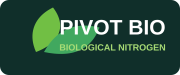
Biological nitrogen options that can support a whole-season fertility and crop nutrition plan.
Services
Partnered services and product programs to support fertility, crop nutrition, seed planning, and biological nitrogen decisions.
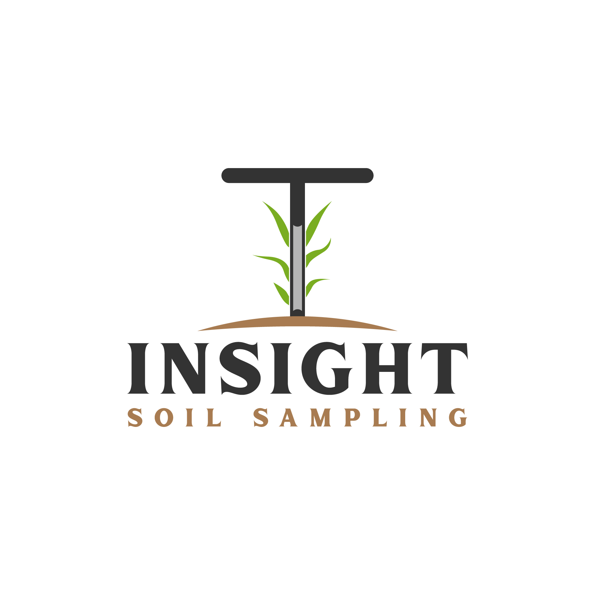
01Soil sampling support to identify nutrient needs, field variability, pH, and management priorities.
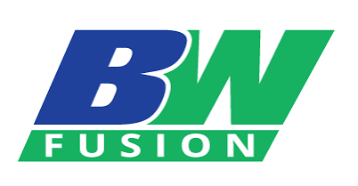
02Crop nutrition programs and product support for in-season plant health and performance.
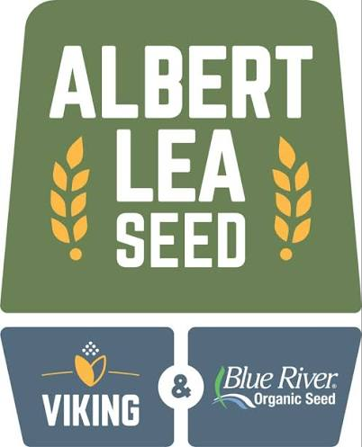
03Seed options including cover crops, forages, small grains, and organic-focused solutions.
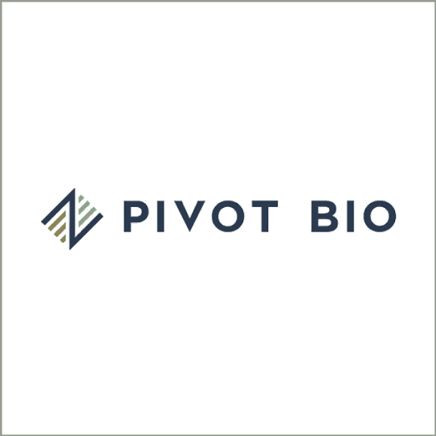
04Biological nitrogen options that can support a whole-season fertility and crop nutrition plan.
Next step